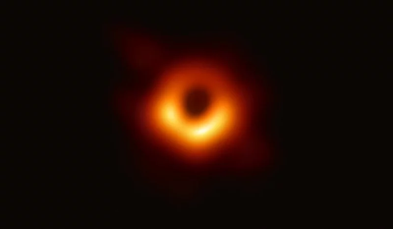

Pada tahun 1974, buat pertama kalinya Hadiah Nobel Fizik dianugerahkan untuk penemuan dalam bidang astronomi. Satu bahagian hadiahnya diberikan kepada Sir Martin Ryles dan satu lagi kepada Antony Hewish untuk kajian masing-masing yang membuka jalan baharu untuk bidang Fizik melalui pencerapan gelombang radio untuk melihat langit.
Antony Hewish berperanan menemui dan mengenal pasti bintang-bintang yang mengeluarkan sinaran radio secara berkala seolah-olah sedang berdenyut. Bintang-bintang ini diberikan nama pulsar sempena sifat denyutan ini. Alat-alat untuk mencerap pulsar ini dibangunkan dan diperhalusi menggunakan hasil fikiran Sir Martin Ryle. Malah, ada banyak lagi kesan yang diberikan oleh pemikiran beliau dan penemuan pulsar hanyalah salah satu daripadanya. Selayaknya, Sir Martin Ryle diberi gelaran Bapa Astronomi Radio.
Dilahirkan pada 27 September 1918, Sir Martin Ryle mempunyai ahli keluarga yang masing-masing mempunyai kepakaran yang tersendiri. Bapanya, John Alfred Ryle ialah seorang pakar perubatan yang pernah berkhidmat di Oxford dan Cambridge. Pakciknya pula ialah seorang falsafawan bernama Gillbert Ryle.
Adik beradiknya juga tidak kurang hebatnya. Abangnya ialah seorang pakar bedah di Shrewsbury dan adik-adiknya pula ada yang menjadi doktor perubatan di Universiti Sussex dan ada yang menjadi pakar Biologi di Hospital Ratu Elizabeth di Birmingham. Sir Martin Ryle ialah anak kedua daripada lima anak yang tinggal.
Beliau ada menunjukkan minat terhadap radio sejak di bangku sekolah lagi. Ditambah pula dengan hakikat bahawa beliau sudah dilatih bertukang, beliau berjaya mencipta pemancar radio ketika mengakhiri zaman persekolahannya. Minatnya terhadap radio serta kemahiran bertukangnya yang diasah sejak kecil ini banyak membantu memacu perkembangan kerjayanya dalam bidang ini.
Sebaik sahaja menamatkan pengajian tingginya di Christ Church di Universiti Oxford, kepakaran beliau disalurkan untuk perang dunia kedua. Teknologi radio perlu dibangunkan untuk mengenal pasti frekuensi saluran dan lokasi siaran radio pihak Jerman serta mencari cara melumpuhkan kebolehan radio mereka. Selain itu, kajian radio ketenteraan juga digunakan untuk mengesan pesawat musuh yang dikenali sebagai teknologi radar. Ryle juga berperanan menyulitkan pengesanan pesawat sendiri oleh radio musuh.
Setelah tamat perang dunia kedua, Sir Martin Ryle kembali bekerja dalam dunia akademia di Cambridge. Beliau mendapati ada satu masalah yang ketara ketika meneliti hasil-hasil penyelidikan dalam bidang pencerapan radio. Masalah-masalah ini yang beliau cuba selesaikan dan ikhtiarnya itulah yang melayakkan dirinya menerima Hadiah Nobel Fizik.
Masalah Besar Astronomi Radio
Berdasarkan catatannya, astronomi radio bermula pada tahun 1932 dengan tinjauan langit yang dilakukan oleh Karl Guthe Jansky. Jansky mendapati wujudnya hingar radio dari satu kawasan langit tertentu. Analisis lanjut mendapati bahawa sinaran radio ini berpunca dari galaksi Bima Sakti.
Kemajuan selanjutnya dalam bidang ini ialah penemuan sumber radio yang dipancarkan oleh bintang induk kita Sang Suria. Pada tahun 1945, George Clarke Southworth mendapati matahari kita juga memancarkan radio tetapi ianya lebih pendek berbanding hingar galaksi yang dikenal pasti sebelum itu, iaitu hanya sekitar 10 cm. Panjang gelombang sinaran radio galaksi pula ialah sekitar 4 meter.
Sebelum Southworth, Jansky ada juga cuba mengesan radio 4 meter ini daripada matahari tetapi tiada hasil seolah-olah matahari langsung tidak memancarkannya. Dia menyimpulkan bahawa bintang-bintang tidak memancarkan radio tetapi dipancarkan oleh gas-gas Bima Sakti. Namun begitu, pada tahun 1946, James Stanley Hey mendapati radio 4 meter ini boleh dikesan daripada matahari sewaktu banyaknya tompok matahari.
Apa yang berlaku ialah matahari kelihatannya halimunan pada radio 4 meter kerana wujudnya lambakan sinaran latar daripada galaksi Bima Sakti. Kita akan dapat mencerap sinaran radio matahari hanya apabila sinarannya lebih kuat daripada sinaran latar. Kekuatan sinaran radio ini berkadaran dengan saiz dan jumlah tompok matahari.
Umpamanya begini: bintang sememangnya ada banyak bertebaran di seluruh langit kita tidak kiralah di waktu pagi atau malam. Namun, bintang-bintang ini tidak kelihatan di waktu pagi kerana cahaya matahari sangat kuat berbanding cahaya bintang. Kita akan boleh lihat bintang-bintang di waktu pagi ketika gerhana matahari, iaitu apabila cahaya bintang adalah lebih kuat berbanding cahaya matahari yang dihalang bulan. Dalam kes cerapan Hey, sinaran radio matahari ketika bertompok menjadi lebih kuat berbanding sinaran latar galaksi.
Sir Martin Ryle sedang cuba mencari cara untuk mencerap sinaran radio matahari bila-bila masa sahaja yang dikehendaki tanpa perlu menunggu munculnya tompok. Beliau ingin mencerap radio suria tanpa diganggu latar radio daripada galaksi. Masalah dengan sinaran radio matahari ini ialah saiz matahari yang sangat kecil berbanding saiz galaksi. Jadinya, kalau kita mampu mencerap sinaran radio dari arah matahari sekalipun, kita tidak mampu membezakannya daripada sinaran radio latar yang dipancarkan galaksi.
Bayangkan kita cuba mencari biji tembikai di atas jalan tar. Disebabkan kedua-duanya berwarna hitam dan biji tembikai itu tersangatlah kecil, kita hanya akan nampak jalan tar tanpa mampu mencari biji tembikai. Begitulah juga dengan sinaran radio ini. Kedua-duanya memancarkan sinaran yang sama, tetapi disebabkan saiz matahari yang kecil, kita tidak mampu mengenal pasti yang mana satu sinaran yang dipancarkan oleh matahari dan yang mana pula merupakan sinaran galaksi. Kalau kita mahu membezakan biji tembikai daripada kehitaman jalan tar, kita perlukan cara untuk melihat gambar sekecil saiz biji tembikai itu.
Kebolehan untuk melihat butiran kecil di langit dipanggil resolusi sudutan. Resolusi sudutan yang besar akan mengaburkan butiran-butiran yang kecil. Butiran-butiran kecil akan lebih jelas kelihatan sekiranya resolusi sudutan ini kecil. Resolusi sudutan ini adalah seperti piksel dalam gambar yang diambil oleh kamera. Jika objeknya lebih kecil dari saiz satu piksel, maka objeknya akan nampak kabur.
Sir Martin Ryle sedang cuba mengecilkan saiz piksel ini.
Menajamkan Teropong Radio
Satu-satunya cara yang diketahui oleh ahli astronomi pada waktu itu untuk mengecilkan resolusi sudutan ialah dengan memperbesarkan alat cerapannya. Resolusi sudutan juga bergantung kepada panjang gelombang elektromagnet yang ingin dicerap. Oleh itu, gelombang radio memerlukan pencerap yang sebesar padang bola untuk menghasilkan resolusi sudutan yang memuaskan. Hal ini memakan kos yang sangat banyak sehinggakan ia dianggap mustahil.
Kebijaksanaan Sir Martin Ryle ialah dengan mencipta kaedah untuk mengecilkan resolusi sudutan ini tanpa membina teleskop yang besar belaka. Beliau telah menunjukkan bahawa teleskop-teleskop bersaiz biasa boleh disambungkan dalam satu rangkaian untuk berfungsi seolah-olah ia adalah satu teleskop yang besar! Beliau menemui cara menyatukan gambar-gambar yang diambil oleh beberapa teleskop untuk menghasilkan satu gambar yang terperinci.
Menggunakan kaedah ini, beliau meninjau langit dan memetakan sumber-sumber radio di langit. Tinjauan beliau sudah mengenal pasti lebih kurang 2,000 sumber radio pada pertengahan abad ke-20. Didapati radio latar yang berpunca dari galaksi itu sebenarnya adalah daripada bintang-bintang yang bertebaran di dalamnya. Kelemahan alat cerapan pada zaman sebelum ini serta jumlah bintang pemancar radio yang banyak jumlahnya kelihatan seperti ia dipancarkan oleh satu jasad yang besar.
Sumbangan Sir Martin Ryle membolehkan ahli-ahli astronomi radio mencerap jasad-jasad halus di langit menggunakan teleskop radio yang sebelum itu tidak boleh dilakukan. Hal ini membenarkan ahli astronomi mengintai ke kawasan angkasa yang lebih jauh. Bagi kita yang di atas Bumi, jasad-jasad yang tersangat jauh kelihatan hanyalah seperti butiran-butiran pasir walaupun saiz sebenarnya adalah sebesar ribuan gunung-ganang.
Nak bayangkan betapa besarnya sumbangan beliau: pada tahun 2019, sekumpulan penyelidik telah berjaya menangkap gambar lohong hitam M87* sejauh 53 juta tahun cahaya. Usaha ini dijayakan dengan menggunakan rangkaian teleskop-teleskop yang diselerakkan di serata permukaan bumi seolah-olah ia adalah satu teleskop besar bersaiz bumi! Hal ini pastinya mustahil tanpa sumbangan Sir Martin Ryle yang tidak hilang ditelan zaman.

Gambar 1. Lohong hitam M87* yang berjaya dicerap menggunakan rangkaian teleskop Event Horizon yang diselerakkan di seluruh permukaan bumi.
Kemahiran bertukang yang diasah sewaktu zaman sekolah telah membolehkannya melibatkan diri secara langsung dalam setiap aspek pembinaan teleskop dengan teliti. Pengalamannya ketika perang dunia kedua telah memberikannya banyak pendedahan tentang alat-alat berkaitan radio yang bukan sahaja dimiliki negaranya, tetapi juga negara musuh serta negara sekutu. Pastinya, gabungan kedua-dua pengalaman ini mengajarnya banyak perkara yang membolehkan beliau mencapai hasil kerja yang layak memenangi Hadiah Nobel.
Sir Martin Ryle dianggap sebagai Bapa Astronomi Radio bukanlah kerana beliau orang yang pertama mencerap langit menggunakan radio, tetapi kerana beliau telah menyelesaikan masalah asasi yang menghantui pencerapan sinaran radio. Buah fikirannya telah meletakkan astronomi radio setara dengan astronomi cahaya tampak serta telah membolehkan kita memperkembangkan lagi fahaman berkaitan alam serta asal-usulnya.
DAFTAR ISTILAH
- Bintang Induk = Host Star
- Falsafawan = Philosopher
- Resolusi Sudutan = Angular Resolution
DAFTAR GAMBAR:
- Gambar Utama: The National Radio Astronomy Observatory (CC BY 3.0), pautan: https://public.nrao.edu/gallery/vla-panorama/
- Gambar 1: European Southern Observatory (CC BY 4.0), pautan: https://www.eso.org/publiceso1907a/
RUJUKAN:
- Encyclopedia. 2020. Radio Astronomy. The Gale Encyclopedia of Science.
https://www.encyclopedia.com/science-and-technology/astronomy-and-space-exploration/astronomy-general/radio-astronomy [11 Julai 2020]. - Encycolpedia. 2020. Sir Martin Ryle. Science and Its Times: Understanding the Social Significance of Scientific Discovery.
https://www.encyclopedia.com/science/encyclopedias-almanacs-transcripts-and-maps/sir-martin-ryle [11 Julai 2020]. - Graham-Smith, F. 1986. Martin Ryle. 27 September 1918-14 October 1984. Biographical Memoirs of Fellows of the Royal Society 32 (Dis.): 496- 524.
https://www.jstor.org/stable/770121 [10 Julai 2020]. - Lutz, O. 2019. How Scientists Captured the First Image of a Black Hole. NASA/JPL, 19 April.
https://www.jpl.nasa.gov/edu/news/2019/4/19/how-scientists-captured-the-first-image-of-a-black-hole/ [11 Julai 2020]. - Nobel Prize. 1974. The Nobel Prize in Physics 1974.
https://www.nobelprize.org/prizes/physics/1974/ [9 Julai 2020]. - Physics Today. 2017. Martin Ryle. Today in History, 27 September.
doi:10.1063/PT.6.6.20170927a [11 Julai 2020] - Ryle, M. 1950. Radio Astronomy. Rep. Prog. Phys. 13: 184-245.
http://iopscience.iop.org/0034-4885/13/1/305 [11 Julai 2020]. - Sullivan, W. 1984. Martin Ryle, British Astronomer and Nobel Laureate, Dies At 66. The New York Times, 17 Oktober.
https://www.nytimes.com/1984/10/17/obituaries/martin-ryle-british-astronomer-and-nobel-laureate-dies-at-66.html [12 Julai 2020].